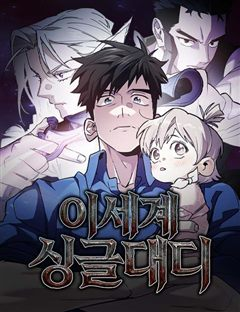
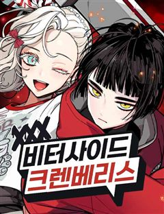
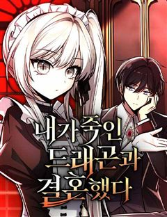

멸망 이후의 세계 같은 웹툰 추천

멸망 이후의 세계 · 언데드딸기 / 언데드감자 / 싱숑
멸망 이후의 세계 재밌게 봤다면 이 웹툰들도 좋아할 거예요. 같은 장르이면서 아포칼립스, 차원이동, 세계관 같은 요소가 겹치는 작품을, 겹치는 요소가 많은 순서로 20개 골랐어요.
2026-10-02 기준 · 네이버웹툰·카카오웹툰·레진코믹스 · 성인 작품 제외
내 취향으로 직접 골라 추천받기 →-
1
 네이버웹툰
네이버웹툰언스탯
이세계로 전송된 무협 최강의 남자 ‘아수라’ 오직 무력만으로 정점에 선 그는 오직 자신의 손만으로 스탯창과 탑을 부수며 플레이어로서의 참가를 거절한다.
차원이동세계관액션판타지먼치킨판타지액션네이버웹툰에서 보기 → -
2
 네이버웹툰
네이버웹툰비인간서사
2055년 서울. 문명은 상승하고 개인은 추락한다. 청년 하늘은 엄마의 수술 비용을 갚으며 살아간다. 어느 날, 운명이 그를 찾아왔다.
아포칼립스세계관액션판타지판타지액션네이버웹툰에서 보기 → -
3
 네이버웹툰
네이버웹툰보이드맨
신들이 지배하는 포스트 아포칼립스. 가족을 앗아간 신을 죽이기 위해, 난 죽음으로 들어갔다. “공허여, 내게 힘을 빌려줘. 신을 죽일 수 있는 힘을...!”
아포칼립스세계관먼치킨판타지액션네이버웹툰에서 보기 → -
4
 네이버웹툰
네이버웹툰야매 힐러로 사는 법
어느 날 강승현은 이곳 아즐 대륙에서 눈을 떴다. 이유는 모른다. 그냥 깨어나고 보니 한국이 아닌 판타지 세계에 던져진 것이다. ‘내가 왜 이딴 곳에 온 걸까.’ 그때 눈앞에 떠오르는 상태창 [당신의 직업은 힐러'?입니다.] 하지만 그의 스킬 중에는…
차원이동액션판타지이세계판타지액션네이버웹툰에서 보기 → -
5
 네이버웹툰
네이버웹툰환생좌
신의 심심함을 만족시키기 위해 시작된 이면세계, 그로 인해 멸망 직전 위기에 처한 인류는 마지막 생존자 중 한 명인 '강한수'를 과거로 보내 미래를 바꾸려 한다. "너희가 가장 믿어야 할 것은 자신의 능력이다. 쓸모없으면 반드시 버려지기 마련이지"
아포칼립스액션판타지이세계먼치킨판타지액션네이버웹툰에서 보기 → -
6

네이버웹툰이세계 싱글대디
어느날 아내가 실종됐다. 희귀병을 앓는 어린 딸은 치료법도 없고, 숨 쉴틈이라곤 없는 삶이 이어진다. 결국 삶을 포기하려던 그때, 딸과 함께 이세계에 떨어져 버렸다. 그것도 아내가 쓴, 어둡고 끔찍한 다크 판타지 소설 속으로! 내 딸... 내 딸만은…
차원이동액션판타지이세계판타지액션네이버웹툰에서 보기 → -
7
 네이버웹툰
네이버웹툰나만 보는 탑 공략집
[당신은 공략집을 사용 하시겠습니까?] 어느 날 찾아온 의문의 메시지, 지구의 종말과 함께 생존 게임이 시작되었다. 서로를 '불신' 하게 하며, '다툼'을 일으키고, '파멸'에 이르기를 유도하는 탑 ···. 나는 결코 흔들리지 않을 것이다. 믿어주는…
아포칼립스액션판타지먼치킨판타지액션네이버웹툰에서 보기 → -
8네이버웹툰
고블린 주식회사
출근길 대신 마계에 떨어진 평범한 회사원 오 과장. 눈뜨니 멸망 직전 고블린 영주가 되었다. 살려면 빼앗고, 살아남으려면 정복해야 한다. 샐러리맨의 근성으로 마계의 판도를 뒤엎는다.
차원이동액션판타지이세계판타지액션네이버웹툰에서 보기 → -
9
 네이버웹툰
네이버웹툰전지적 독자 시점
'이건 내가 아는 그 전개다' 한순간에 세계가 멸망하고, 새로운 세상이 펼쳐졌다. 오직 나만이 완주했던 소설 세계에서 평범했던 독자의 새로운 삶이 시작된다.
아포칼립스세계관먼치킨판타지네이버웹툰에서 보기 → · 전지적 독자 시점 같은 웹툰 → -
10
 네이버웹툰
네이버웹툰나이트런
우주력 430년. 성간이동이 가능해져 별과 별을 이동하는 시대 인간은 괴수와 싸우고 있다. 기사와 함께.광활한 우주를 배경으로 판타지 SF가 다가온다.
아포칼립스세계관먼치킨판타지네이버웹툰에서 보기 → -
11네이버웹툰
중세 판타지 속 망나니 경비조장
노동법도 없는 무식한 중세. 전쟁과 빈곤, 마법과 비상식이 지배하는 이곳에서 경비조장은 오늘도 뺑이를 친다.
차원이동이세계먼치킨판타지네이버웹툰에서 보기 → -
12
 네이버웹툰
네이버웹툰마수 사냥꾼이 살아가는 법
12년 동안 정체 모를 악몽으로 인해 고통 받던 우진은 갑작스러운 죽음을 맞이하게 되는데... 그가 눈을 뜬 곳은 다름 아닌 악몽 속 세상, '마경'. 그동안 갈고 닦은 실력으로 마수를 사냥하며 강해지는 우진은 마수 사냥꾼으로서 새로운 삶을 살아가기…
세계관이세계먼치킨판타지네이버웹툰에서 보기 → -
13
 네이버웹툰
네이버웹툰세상도 구해본 놈이 잘 구한다
이세계를 구했더니, 지구가 더 막장이었다. 하지만 걱정 마라. 세상 구해본 놈이, 한 번 더 구한다.
차원이동액션판타지판타지액션네이버웹툰에서 보기 → -
14

-
15
 네이버웹툰
네이버웹툰라서드
절대적 권능을 지닌 11인의 왕과, 왕을 수호하기 위한 기사단이 존재하는 세계. 수습기사 힌타는 파트너 캐넛과 함께 정식 기사가 되기 위한 모험을 떠나는데... 정식기사가 되기 위한 소년들의 고군분투 정통판타지액션!
세계관액션판타지판타지액션네이버웹툰에서 보기 → -
16
 네이버웹툰
네이버웹툰검술명가의 네크로맨서
대륙을 공포로 몰아넣었던 최강의 네크로맨서 아키몬드. 그는 영웅 베르켈 라인란트의 검에 목숨을 잃는다. 그리고 200년 후, 어느 가문의 아기로 태어나 첫 마디를 뱉는다. “어둠의 문지기와 하수인 그리고 병사들이여, 내 명을 받들라!“
세계관액션판타지판타지액션네이버웹툰에서 보기 → -
17

네이버웹툰내가 죽인 드래곤과 결혼했다
반신의 경지라 불리는 9서클. 그 마지막 열쇠는 레드 드래곤, 발드로바의 심장이었다. “설마 짐의 약혼자가 짐을 죽이러 올 줄이야.” 어째서인지, 발드로바는 저항 없이 스스로 심장을 내어주었다. "... 뭐냐, 이 감정은. 어째서 이토록 찝찝한 거냐…
세계관액션판타지판타지액션네이버웹툰에서 보기 → -
18네이버웹툰
이세계 만물슈퍼
식칼에 의해 열린 차원문을 통해 현실과 이세계를 오가게 된 만물슈퍼 주인 한지오. 아공간을 이용해 현실과 이세계에서 장사를 시작한다. 물건을 팔아 번 돈으로 소소하게(?) 건물주가 되고 싶었을 뿐인데 용사 일행이 되어 마왕의 재림까지 저지하라고? 만…
차원이동액션판타지판타지액션네이버웹툰에서 보기 → -
19
 네이버웹툰
네이버웹툰마탑의 문제아들
백탑의 마탑주 오스카 세이지와 백탑의 마법사들. 인류의 미래를 위해 목숨을 비롯한 모든 것을 바쳤다. 그로부터 20년 후. 오스카 세이지가 다시 눈을 떴을 때, 창문에 비친 건 기초 마법밖에 쓰지 못하는 1레벨 마법사. 그리고 4대 마탑 퇴출 위기를…
세계관액션판타지판타지액션네이버웹툰에서 보기 → -
20